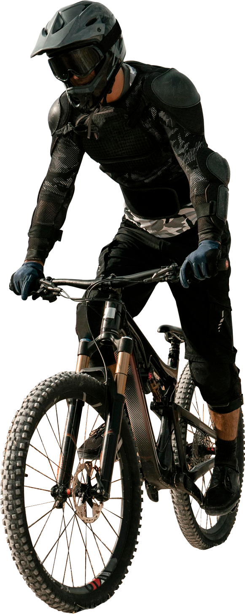
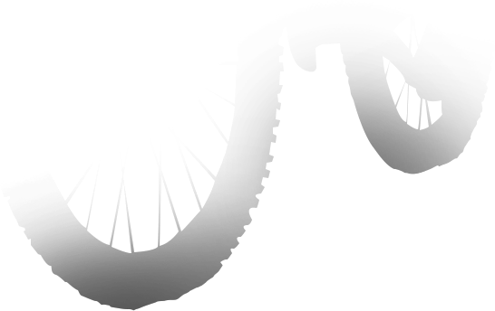
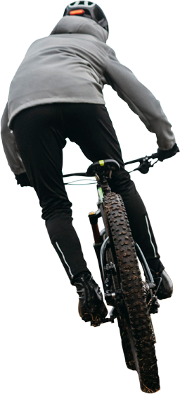
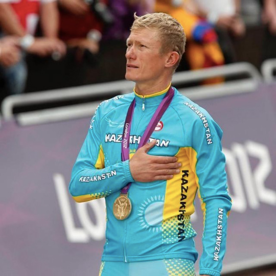
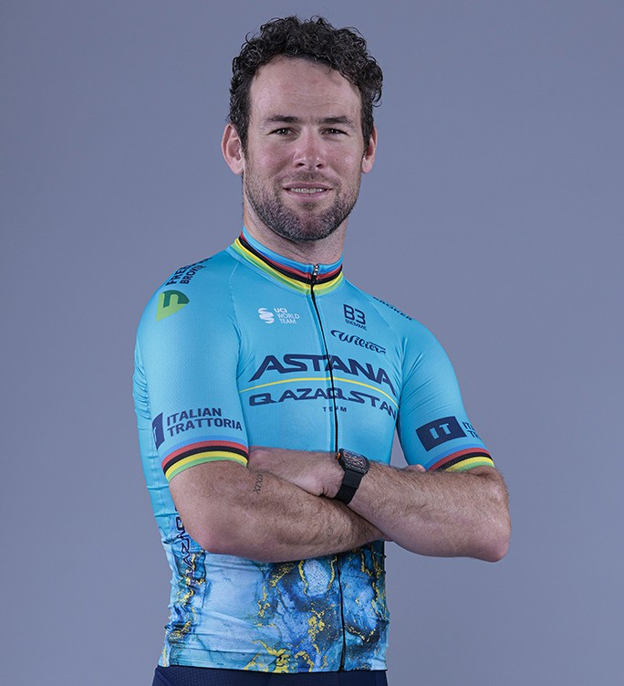
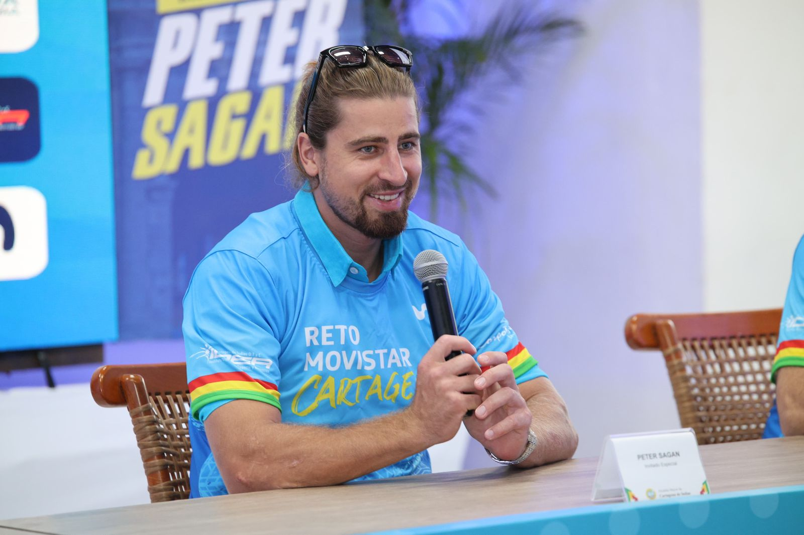

If you want to participate in the cycling race, click the button below.


About cycling
The cycling race will be held in two stages at the Sokol circuit on September 6, 2026
The STC Sokol circuit is located 65 km from the city of Almaty. It is the highest-class highway circuit in Kazakhstan. The STC Sokol project was developed by the design bureau of Hermann Tilke, the author of almost all the circuits that have appeared on the Formula 1 calendar in the 21st century, from Sepang in Malaysia to Yas Marina Circuit, which hosts the Abu Dhabi Grand Prix.
Race Program
Two intense stages at the STC Sokol circuit
Time Trial (Individual)
An intense individual race against the clock. Riders start one by one to set the fastest lap time on the high-speed Sokol circuit geometry.
Criterium (Group Race)
A thrilling multi-lap group race full of tactics and speed. The ultimate test of endurance and sprinting skills on the final straight.
Special Guests
Meet the cycling legends and race ambassadors joining us at STC Sokol

Alexander Vinokourov
Olympic ChampionKazakhstan's cycling legend, 2012 Olympic Gold Medalist, and General Manager of Astana Qazaqstan Team.

Sir Mark Cavendish
TDF Record HolderThe greatest sprinter in cycling history, World Champion, and legendary rider of Astana Qazaqstan Team.

Peter Sagan
3x World ChampionThree-time consecutive World Champion and one of the most charismatic superstars in modern cycling.